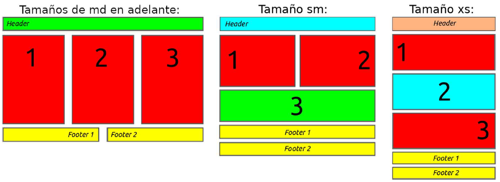

Personalizando mediante media query
En este ejercicio se pide que creéis una nueva página web usando la
librería Bootstrap. El contenido aparecerá centrado en la pantalla y
constará de tres filas con el siguiente contenido y disposición, cuando la
pantalla sea de tamaño medio (md) y grande (lg, xl y xxl):
-
Una fila en la parte superior con una única columna con fondo
verde que ocupará todo el ancho, en dicha columna aparecerá
el texto "Header" alineado a la izquierda y en grande.
-
Una segunda fila con tres columnas en color rojo con el mismo
ancho y con los números 1, 2 y 3 (respectivamente) centrados
y en letras grandes.
-
La tercera y última fila contendrá dos columnas de igual ancho
y en color amarillo, la primera columna tendrá el texto "footer 1"
alineado a la derecha y la segunda el texto "footer 2" alineado a
la izquierda (ambos usando un tamaño de fuente grande).
En la siguiente imagen se puede ver un esquema de la web a realizar:

Como se puede ver en el esquema de la imagen, la disposición de las
columnas y la alineación de los textos variará dependiendo del tamaño
de la pantalla. Tenéis que reproducir este comportamiento para que la
apariencia de la web sea similar al esquema (número de columnas,
alineaciones de los textos y colores) cuando el tamaño de la pantalla sea
la de un tablet (sm) o la de un teléfono (xs).
Tened en cuenta que:
- Siempre que sea posible se utilizarán las clases que provee Bootstrap.
-
Cuando no sea posible (por ejemplo para controlar la
alineación de los textos y el cambio de color del fondo)
tendréis que definir una media query que lo haga.